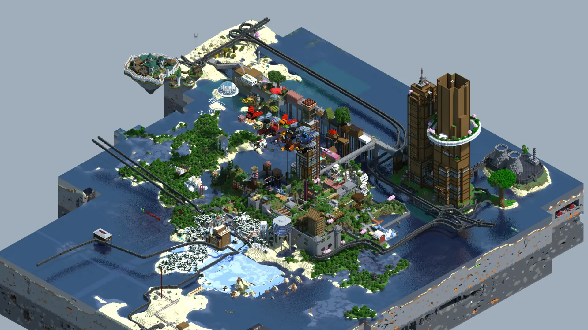

Origin · Primary sector
Where Redstoneworld began.
The center and oldest sector of Project Redstoneworld. Founding Island preserves builds dating back to 2013 while continuing to serve as the world’s main point of arrival.
Read the wiki record